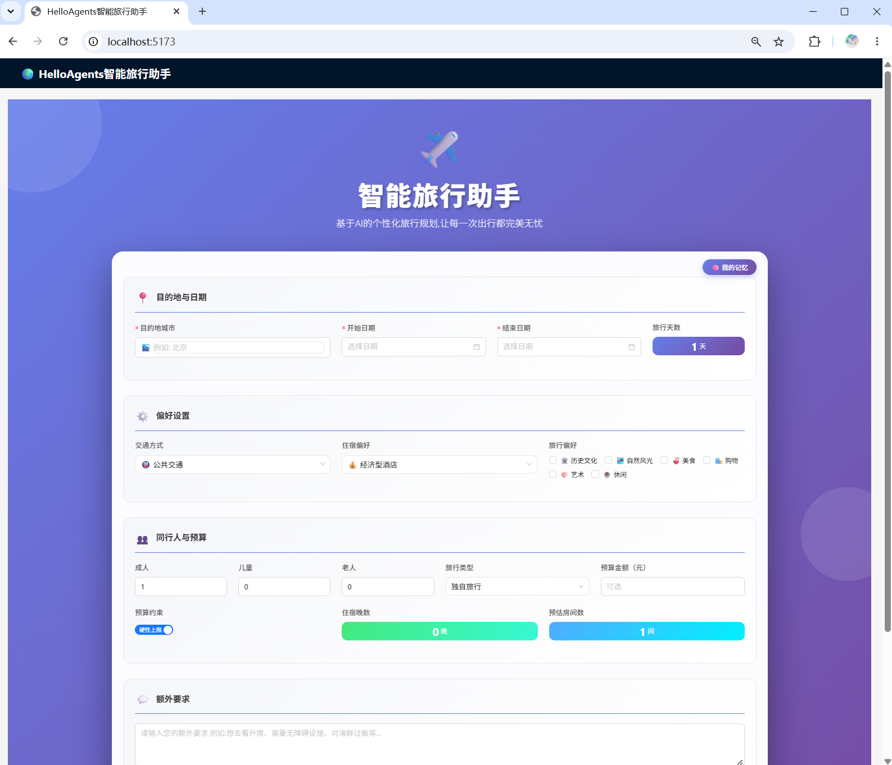
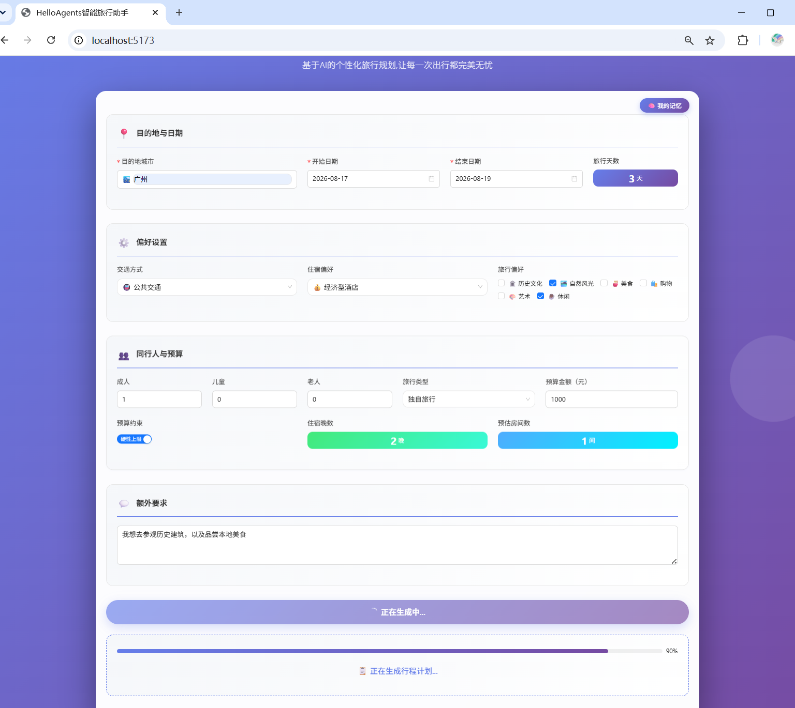
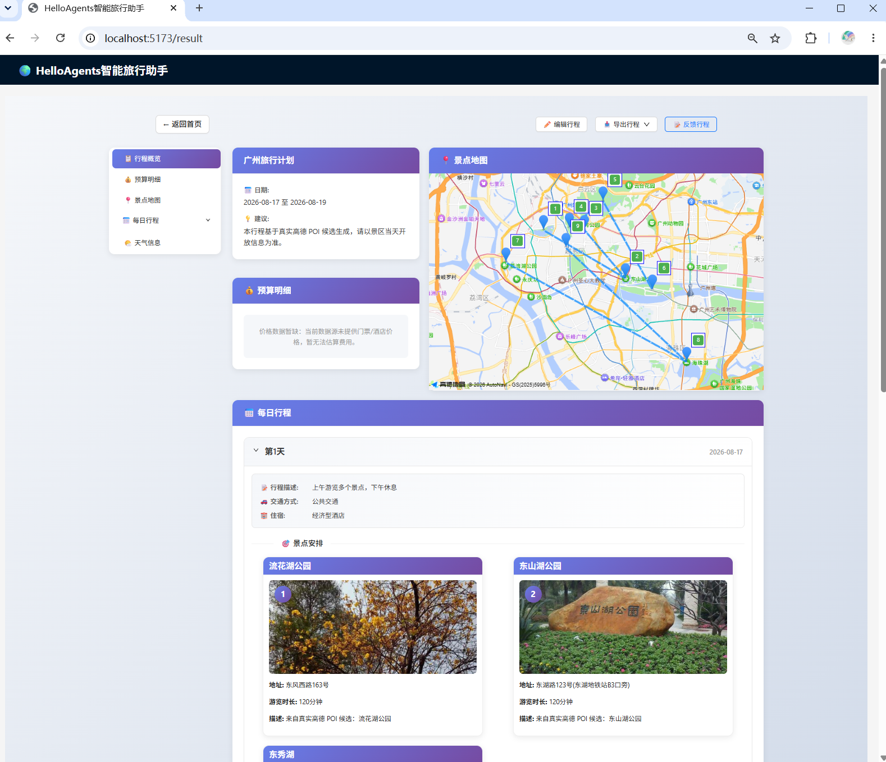
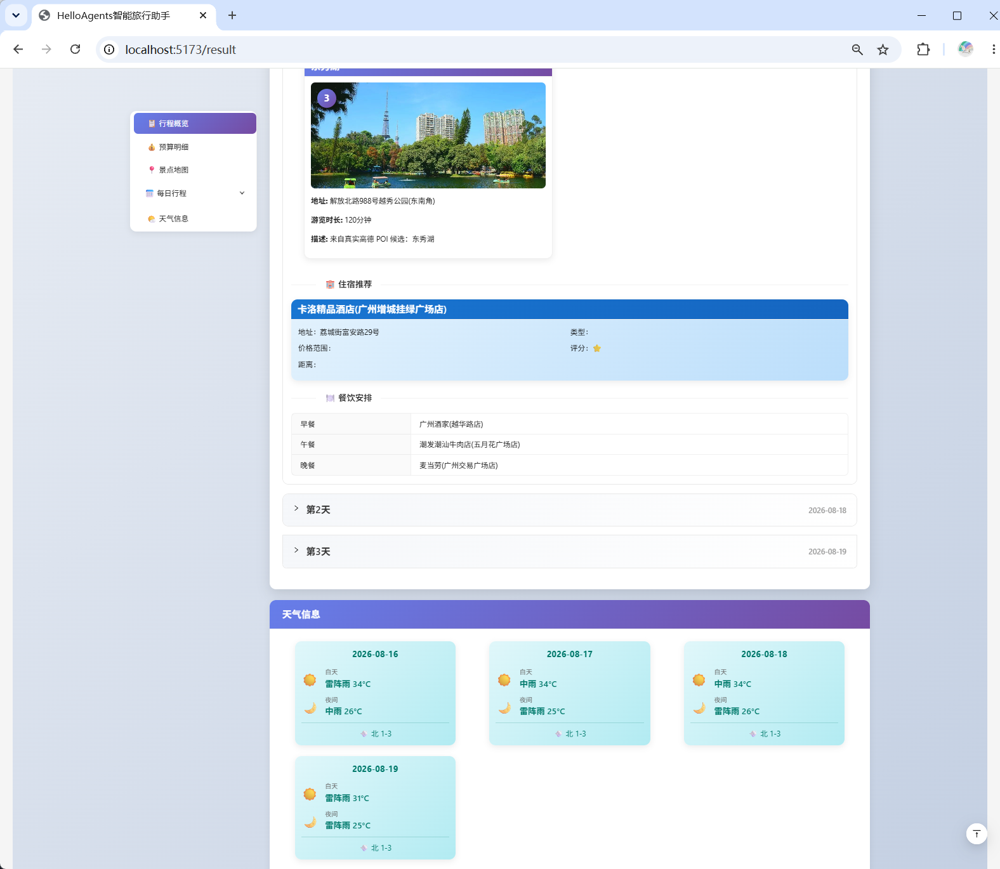

基于 FastAPI + LangGraph + 高德 MCP 的旅行规划智能体。支持意图路由、用户偏好记忆、多候选生成与规则评测，以候选 ID 约束自主编排真实景点与酒店，如按预算生成每日可验证的完整行程。
基于 FastAPI + LangGraph + 高德 MCP 的旅行规划智能体。支持意图路由、用户偏好记忆、多候选生成与规则评测，以候选 ID 约束自主编排真实景点与酒店，如按预算生成每日可验证的完整行程。
FastAPI、LangGraph、高德 MCP、SQLite + sqlite-vec、BGE-M3、bge-reranker-v2-m3、Python、TypeScript
持久连接池 + 并发控制 + 两级缓存，第三方调用统一超时管控、失败自动重连 → 暖缓存候选编译约 2.85s、命中率近 100%，错误响应不缓存。
一次生成 3 套差异化候选，规则优先 + 语义重排，不合格方案不参与择优；fast 模式架构层面省约 75% LLM 调用；另外支持多 Agent 模式：拆分景点 / 天气 / 酒店 / 规划 4 个子任务，子模块自主调工具取真实数据后组装行程。
实现结构化 + 向量双轨记忆，规划阶段自动注入；只调整节奏与排序、不生成事实，加载异常自动降级。
LangGraph 图编排 + 纯 Python 双轨，异常自动回退不单点故障；代码规则裁判（非 LLM Judge）确定性可回归 → 200+ 单测，候选质量 / 规则命中 / rerank 调用持续回归。



